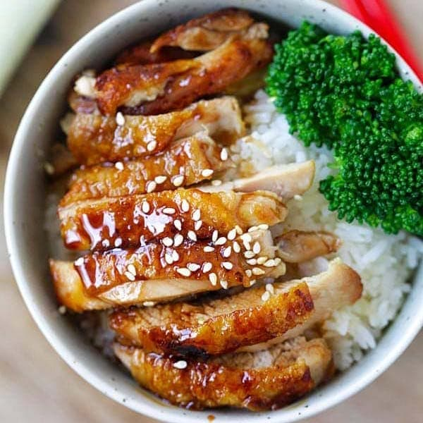

Teriyaki Chicken

A pan fried chicken dish finished and coated with a sweet and savoury soy based glaze, best served on a bed of rice with steamed asian greens.
Ingredient list
- Teriyaki Sauce
- Skin-on Chicken Thighs
- Sake
- Heat skillet over a medium-high flame.
- Add about a tablespoon of oil to pan and add Chicken Thighs to skillet.
- Sear each side of the Chicken thigh for about 2-3 minutes each or until golden brown and then continue to cook further until cooked all the way through.
- Turn heat down to a medium to medium low heat and deglaze pan with a splash or two of sake.
- Add teriyaki sauce and reduce to a glaze making sure to keep the flame on a medium-low to low heat as to not burn the sugar in the sauce.
- Let Chicken Thighs rest for about 5 mins and serve on top of a bed of rice.